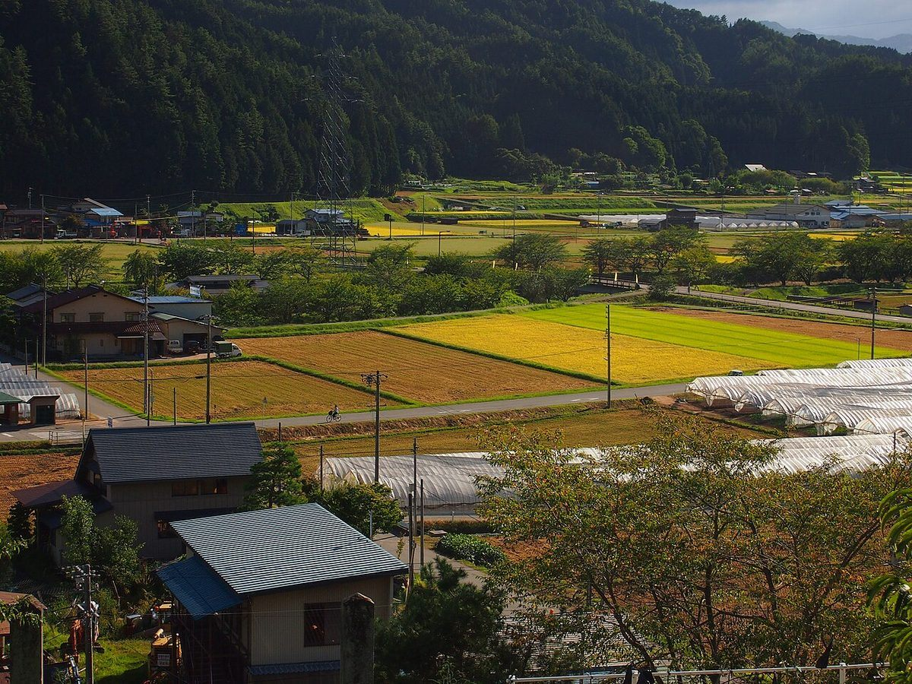
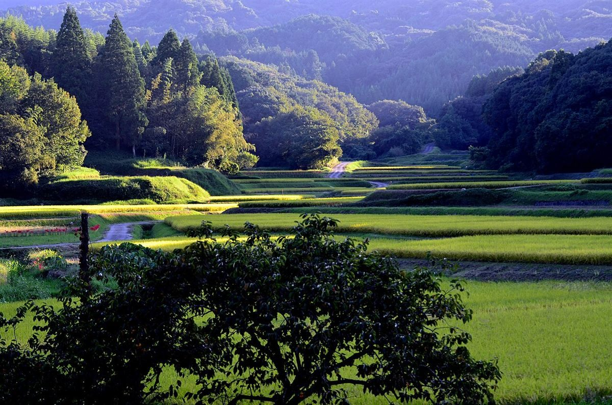
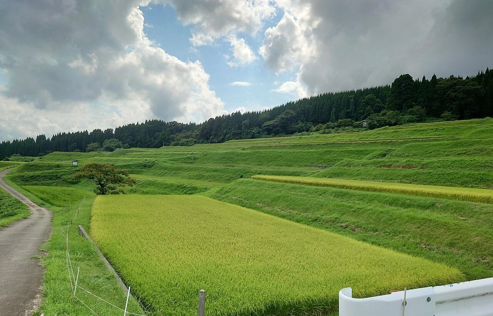
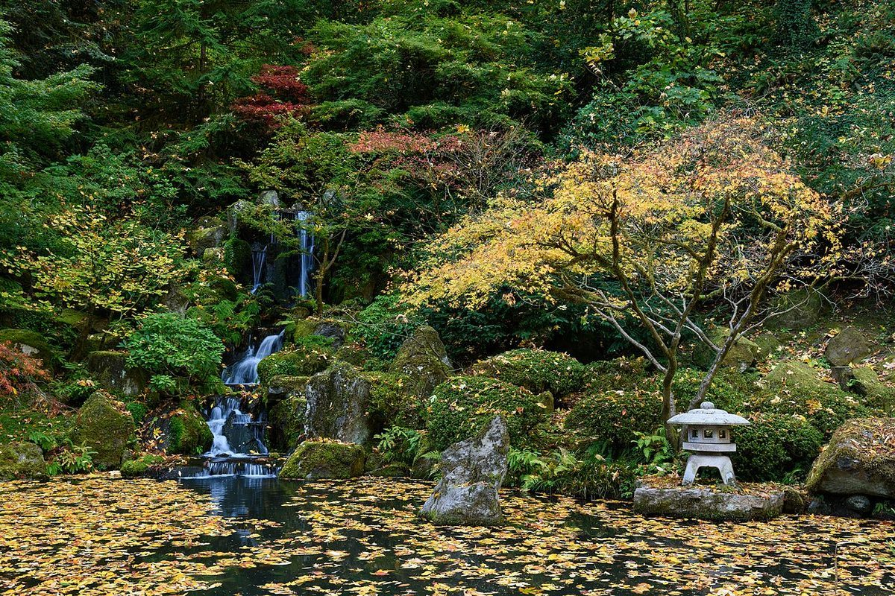

お店について
ここに載せているのは、確認できた情報のみです。そのほかは準備中です。
- 屋号
- 自然派国産茶の専門店 茶ノ花
- 住所
- 鹿児島県出水市麓町13-29
- 電話
- 080-7896-1874
- chanoka_teaclub
- 営業時間・定休日
- 準備中(お問い合わせください)
- 席数・お支払い方法
- 準備中(お問い合わせください)
- スタッフ
- 準備中(お問い合わせください)
- 商品の産地・製法
- 準備中(お問い合わせください)

このサイトのコンセプト(制作側の案)
ひと息つく前に、様子が分かるページ
一度立ち寄ってみたいと思ったとき、どんなお店なのか、いつ開いているのか、どこにあるのかがすぐ分かる。このページはそんな形を目指して、制作側が考えた案です。お店の考えや主張ではありません。分からないことは、分からないままお伝えし、確認できた住所・電話・Instagramにすぐ進めるようにしています。
このコンセプトは制作側の案です。お店が掲げているものではありません。
掲載写真はフリー素材のイメージで、店舗の実際の様子ではありません。他地域で撮影されたもの、撮影地が不明なものを含みます。



お問い合わせ
営業時間や取り扱いなど、準備中の項目は、お電話かInstagramでお尋ねください。